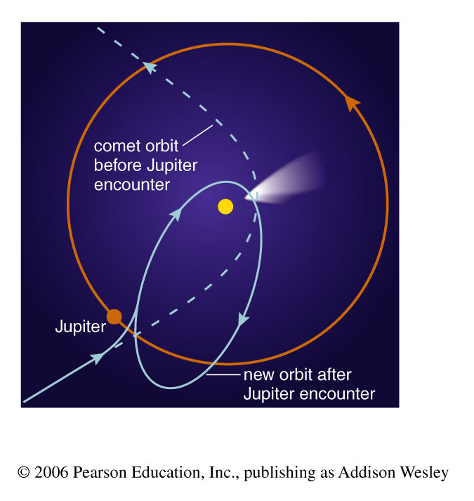

temperature: average random kinetic energy of atoms
temperature normally measured in the “Kelvin scale”
zero is “Absolute Zero”; no negative temperature
- each Kelvin degree same size as “Celsius” or “Centigrade”
freezing point of water is 273° above Absolute Zero (i.e. 273° K)
- boiling point of water is 373° above Absolute Zero (i.e. 373° K)
- “room temperature” (20° C) is at 293° K
L04_temperature_scales
Temperature vs. Heat
Temperature is the measure of the average random energy. (e.g. kinetic, but more…)
\frac{1}{2}mv^2\text{(random)} = 3/2kT
for one particle same T (“thermal energy”)
Temperature and Energy
Temperature is NOT a measure of “directed” kinetic energy, only the random part
Excitation of atoms and molecules can also be measured by temperature
Electronic excitation of atoms
Vibrational or rotational excitation of molecules
BUT can also have “non-thermal” excitation (e.g. in
lasers)
In general (when in “Thermal Equilibrium”), the ”state” of the material is given by temperature and energy in a relationship described by the equations for the Boltzmann Distribution
L04_phases_of_matter
Pressure
Pressure is Force per unit Area – e.g. collisions with surface
In a given length of time (?1 sec) how many atoms/molecules bounce off the surface (area 1 meter2 ) and what component of their velocity is changed producing how much force?
L04_pressure
Gas Pressure
Gases exert pressure through collisions of atoms/molecules/etc with other atoms/… (or with surfaces)
There are other types of pressure too (e.g. solids) Gas Pressure = density * temperature * constant (where the constant depends on the units used)
Ideal Gas Law
P = nkT
n is number density ( #/m^3 or m^{-3} )
T is temperature (ºK)
k is Boltzman’s constant (k = 1.38064852�10^{-23} Joules/ºK)
Pressure and Density
Density is usually expressed, in everyday life, as a mass density… e.g. In kg/m3
Note one can also have surface mass density kg/m2 and linear mass density kg/m
But one often uses number density – the number of
particles such as atoms/molecules in a given
volume, surface, line e.g. In units of \frac{1}{m^3}
For example: mass density (\rho) = particle number(n) \times × average mass of particle\rho = n \mu m_{AMU} where \mu is average mass in amu And one atomic mass unit(amu) = 1.66 ×10^{-27}kg
Air Pressure
Pressure is Force per unit Area – e.g. collisions with surface
EXAMPLE: Density of Earth’s atmosphere at sea level ~1.17 kg/m^3 9000 m
9 km high atmosphere, acceleration 9.8 m/s^2
What is the Force of an air column acting on a 9 km
m^2 of the surface?
F = ma = 1.17 kg/m^3 \times 9000 m � \times 9.8 m/s^2= 1.0 \times �10^5 N/m^2
Air Pressure and Air Density (another example calculation)…. Temperature?
Earth’s atmosphere is primarily nitrogen (N2) and
the mass of one molecule is 2×14×1.66×10^{-27} kg=4.65×10^{-26} kg (2 atoms, atomic weight 14, “atomic mass unit”)
Density of 1.17 kg/m^3 implies number density of
1.17/(4.65×10^{-26}) = 2.5 ×10^{25} /m^310^5 N/m^2 = nkT = 2.5 ×10^{25} /m^3 ×1.38×10^{-23} T \implies T = 290 K ( 17º C )
Pressure versus Gravity
The “fundamental conflict of astronomy”
Gravity pulls everything in the universe together
Pressure pushes everything apart – but only if they
are “touching”!
But gas pressure depends on both temperature and
density
If, for example, the temperature drops, so does pressures
Properties of an ellipse
an orbit’s focus is at the location of the centre of mass of the system
semimajor axis is the average distance of a body from the orbit’s focus
The Sun is close to, but not exactly at, the focus of the ellipse!
Barycenter
L04_barycenter
Centre of Mass
L04_center_of_mass
Objects orbit, in an ellipse, around the Centre of Mass (CM)
m_1a_1 = m_2a_2
location of centre of mass depends on relative masses
in an equal mass system, CM is midway between masses
in Solar System M_{Sun} >> M_{planet} and CM is inside or close to the Sun
more general form of Kepler III
(m_1 + m_2)P^2 = a^3 = (a_1 + a_2)^3
L04_center_of_mass_different_masses
as centre of mass location depends on mass ratio…
so does relative orbital size
Conservation of Energy
energy can be neither created nor destroyed.
energy merely changes its form or is exchanged between objects.
this principle (or law) is fundamental physics/science
the total energy content of the Universe was determined in the Big Bang and remains the same today!
Energy
Kinetic Energy K.E. or K = \frac{1}{2} m v^2
Gravitational Potential Energy U = − G m_1 m_2 /r
Note: at infinity (r = \infty) U = 0
as r decreases (objects come closer together) U gets smaller ! (more negative)
Pot. E + KE=constant …if no external forces!
gravitational potential energy decrease as distance decreases
Therefore orbital kinetic energy (and the velocity) must increase as distance decreases
L04_orbits
Conservation of Angular Momentum
“spin” is conserved: L=mass×speed×distance where the distance is from the rotation axis
L=constant (unless there are external forces)
If the distance (r) changes then the speed (v) must change (smaller r, larger v)
L04_angular_momentumL04_ballerinaL04_planets_coa
Kepler’s Laws derived from Newton’s Equations: “Celestial Mechanics”
use conservation of momentum,
centripetal forces, and gravity to get
general version of Kepler’s Third Law
P^2 = \Bigg[\frac{4\pi^2}{G(m_1 + m_2)}\Bigg]a^3
Use conservation of energy, polar coordinate equation of ellipse (and take time derivatives of position on
ellipse) a lot of algebra to get the “vis viva” equation (velocity as a function of distance from the
v^2 = G(m_1 + m_2)(\frac{2}{r} - \frac{1}{a})
For a circular orbit r = av^2 = G(m_1 + m_2)\frac{1}{a}
three “versions” of Kepler’s Third Law
Kepler’s: P^2 = a^3 (orbits around a 1.0 Solar Mass object)
NOTE: the mass of the Sun is 1 Solar Mass, also M_{sun} or m_{Sun} or M�_{\astrosun}_
More general: (m_1 + m_2)P^2 = a^3 = (a_1 + a_2)^3
(units of mass are Solar Masses, distance in AU, time in years)
Most general:
P^2 = \Bigg[\frac{4\pi^2}{G(m_1 + m_2)}\Bigg]a^3
(units are kg, m, s)
semimajor axis for each object object
around Center of Mass is given)
Example: mSun, AU, y (m_1+m_2)P^2 = a^3 = (a_1+a_2)^3
A planet orbits a 1m_{Sun} star with a period of 20y. What is its orbital semimajor axis?
m1+m2=1 since m_{planet} << m_{Sun}
also can use a_1+a_2=a since a_{planet} >> a_{Sun}
(1)(20)^2=a^3 and a=7.37AU
remember a is the separation between the masses; if masses are more similar you may need to find a_1 and a_2 explicitly to know the orbit of each
what if the planet orbits a 3m_{Sun} star with a 20y period? What is its semimajor axis? - 10.6 A.U.
You can also do this with Newton’s form, SI units; give it a try
Example: kg, m, s
P^2 = \Bigg[\frac{4\pi^2}{G(m_1 + m_2)}\Bigg]a^3
The Moon and the Earth are in mutual orbit with a period of 27.3dand a mean separation of 384,400 km. We know (by
other means) that m_{Earth}= 5.972 x10^{24}kg
What is the mass of the Moon? What are the semimajor axes of the Moon’s and Earth’s orbits?
It is easier to leave the Solar System then to hit the Sun
Velocity of Earth around Sun ~30 km/s. To escape need to go 2 faster (42.4 km/s)
Increase speed by 12.4 km/s
To hit Sun need velocity at Earth of
v^2 = GM_{sun}(\frac{2}{1AU} -
frac{2}{1AU + 7\times10^8}) or v = 2.9km/s
Decrease speed by 27 km/s
Orbital Elements
Not only do we need to specify the inclination of the two orbital planes but is also useful to mark where they cross (the ascending node and the descending node – connected by the line of nodes).
Within our reference plane it is useful to specify a reference direction – usually towards us! We can then describe the ascending nodes position relative to this direction (longitude of ascending node).
In the orbit plane we need to define the direction to the perapsis (argument of periapsis) and where in its orbit the object is at a given instant (the true anomaly).
L04_orbital_elements
Tides: caused by differential forces across a body
remember: the force of gravity varies as distance^2
The difference between gravitational forces varies as distance^3
Ocean Tides on Earth:
vary with alignment of Earth, Moon, Sun
L04_ocean_tides_moon_sun
Tidal Friction
L04_tidal_friction
Tides not just Earth/Moon effect…
Tidal forces are important wherever
differential gravitational forces are large
enough
SS examples: planetary rings, jovian (jupiter) moons
and more
binary stars: close pairs, large envelopes…
vicinity of black holes
galaxies: tidal streams from encounters,
warped disks etc.
Orbits: can be altered by exchange of energy
such as…
collisions
near encounters (multi-body or tidal effects)
examples:
comets and Jupiter
spacecraft
star clusters
galaxies and more
L04_space_collisionsL04_galaxy_collisions
Gravity Waves
Einstein’s theory of General Relativity predicts that gravitational radiation should exist and carry energy
through space
Indirectly detected in binary pulsar by Taylor and
Hulse (1974) (and awarded Nobel Prize 1993)
LIGO built 1994 – 2015.
Laser Interferometer Gravitational-Wave Observatory
Feb 2016: Announced first discovery (14 Sept 2015)
Merger of two black holes: 36+29=62 M_{Sun}
awarded Nobel Prize 2017
Summary
Pressure, density, temperature are inter-related
Gravity
Simplest orbits possible are for two bodies
Orbits are “conic sections” (closed orbits are ellipses)
There are very simple equations for cases where masses are in Solar Masses, distances are in A.U, periods are in years
The general equations (in SI units) are often needed (can
usually distinguish them by “G” appearing in them)